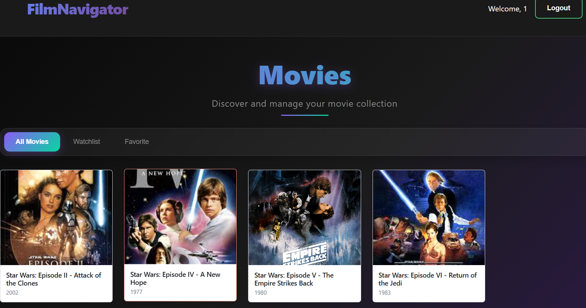
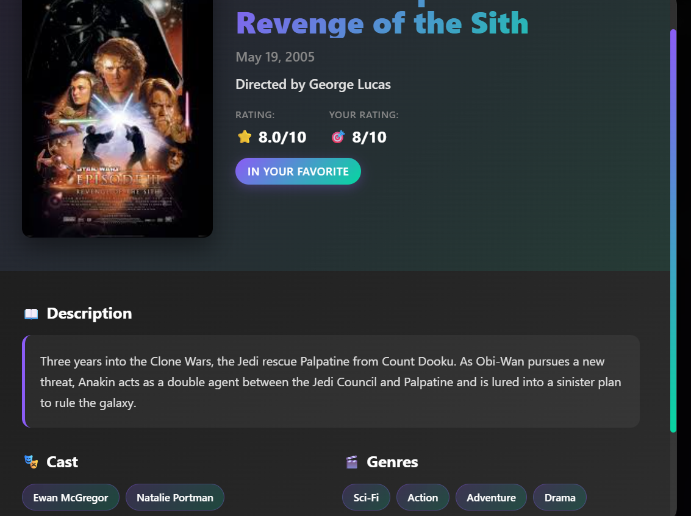

Интеллектуальный каталог фильмов — находи, сохраняй, обсуждай. Быстрое резюме отзывов и персональные списки.
🔎Поиск по вкусу
⭐Избранное / Хочу посмотреть
💬Отзывы + сводка
Описание идеи
FilmNavigator решает проблему «что посмотреть?» и недостатка компактной, удобной и персональной
витрины фильмов с понятной системой списков и отзывов. Пользователь получает:
Рекомендации и фильтры по жанру/году/рейтингам
Возможность составлять списки (favorite / watchlist)
Чтение и написание отзывов + автоматическая сводка по всем отзывам
Пользовательские сценарии
Найти фильм: пользователь заходит → фильтрует каталог → открывает страницу фильма → читает описание и отзывы.
Собрать список: добавляет фильм в «Хочу посмотреть» или в «Избранное» через кнопку на карточке.
Оставить отзыв: пишет отзыв → система агрегирует и показывает краткое содержание всех отзывов.
Почему FilmNavigator лучше существующих сервисов
FilmNavigator предлагает функциональность, которой нет в классических каталогах фильмов вроде
Кинопоиска или IMDb. Главная уникальная особенность — умная система обработки отзывов.
Автоматическое краткое содержание отзывов.
Вместо сотен разрозненных оценок пользователь получает единый краткий вывод —
общее настроение зрителей, плюсы и минусы фильма, частые мнения.
Сводка без спойлеров.
Система фильтрует ключевые моменты так, чтобы пользователь получил понимание качества фильма,
но не сюжетные детали.
Дизайн — макеты
Ниже — три скриншота интерфейсов
Главная — каталогИзбранное / спискиСтраница фильма
REST API (эндпоинты)
Ниже — таблица доступных маршрутов (сервер обрабатывает указанные пути).
Метод
Путь
Описание
POST
/api/user/register
Регистрация пользователя
POST
/api/user/auth
Аутентификация
GET
/api/user
Получить данные текущего пользователя
GET
/api/movie
Получение фильма
GET
/api/movie/all
Список всех фильмов
PATCH
/api/user/movie/rating
Сохранить/обновить рейтинг пользователя для фильма
PATCH
/api/user/movie/list
Сохранить тип списка (favorite/watchlist)
GET
/api/user/movie
Получить статус/рейтинг фильма для текущего пользователя
GET
/api/user/movie/all
Получить все фильмы из списков пользователя
PUT
/api/user/movie/review
Добавить/обновить отзыв
DELETE
/api/user/movie/review
Удалить отзыв
GET
/api/user/movie/review
Получить отзыв текущего пользователя
GET
/api/movie/review/all
Получить все отзывы по фильму
GET
/api/movie/summary
Краткое содержание (summary) всех отзывов по фильму
Дополнительно — идеи и расширения
Персональные рекомендации на основе истории просмотров и оценок
Импорт/экспорт списков, шаринг с друзьями
ML-модуль для генерации ещё более точной сводки отзывов